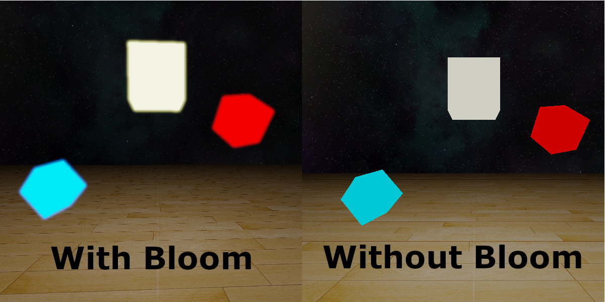

Lucas Kanabe
Game Programmer
I created the Crographic Engine during my 5th semester game engine class at Humber College. Written in C++ and OpenGl, I've used the creation of this engine to help me advance my knowledge of the OpenGL framework and 3D graphics programming as a whole.
Current main features in the most recent release include: Scene graph usage, mesh, texture, and shader management, primitive shape and mesh creation, model loading, lighting, normal mapping, basic reflectivity, skyboxes, and cameras.
During the creation of the Cryographic Engine, I've learned how to use OpenGl to create 3D graphics in an organized manner. This has involved me learning how to manipulate vertices and fragments in the shader and also the models/meshes that contain them in the game space.
Gameobjects and their models/meshes can be created in the game scene by the user using a scene graph structure, to organize a parent-child relationship. These meshes and their materials, as well as shaders, can be reused for different gameobjects without instantiating them more than once. Below is a video of two meshes being reused on all the gameobjects in the scene, while also showing all the child gameobjects following the parents position change.
Model loading is also available in the engine, being able to manipulate each individual mesh and re-use them throughout the engine like all other meshes. Below is a picture of the a nanosuit model from Crysis with a spotlight effect and reflection maps able to react with the skybox.
Shadows are now supported in the engine. The directional light of the scene can cast shadows onto any object below. Using cascaded shadow maps, or CSM, I'm ensuring that the fidelity of close up shadows are kept, whilst also shadowing distant objects to keep realism.. Below is a small video showing my simple implementation of CSM in my engine.
HDR and bloom have been implemented in the engine to enhance the lighting and detail during different types of scenes. The exposure can be changed to either highlight the bright or dark areas of the scene, allowing detail to always be kept no matter the lighting available. For brightly lit parts of the scene, bloom adds visual flair by blurring the fragments that pass a certain threshold. Below is an image of bright lights with and without bloom.
The features I'm going to be working on implementing in the future include: advanced lighting effects, shadow mapping, deffered rendering, physics based rendering, rigidbodies, and more. I'm currently working on improving the lighting in the engine, and adding shadow mapping.